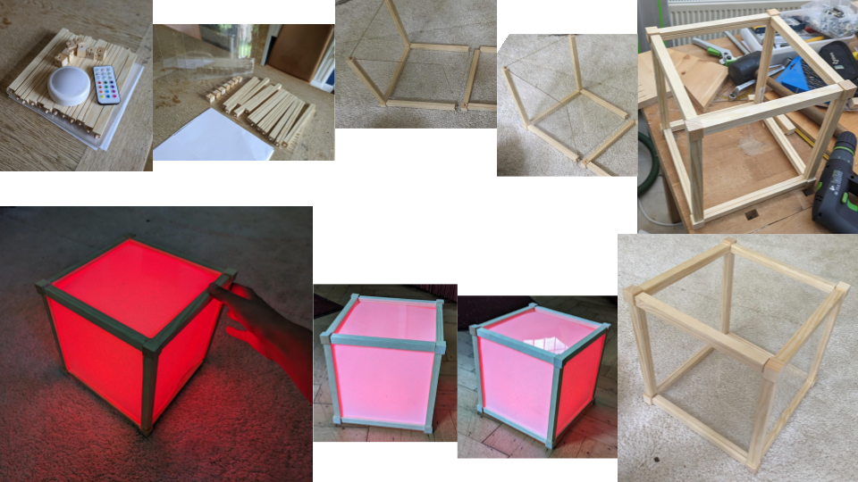

Light Prototypes
I spend some time thinking about light and experimenting with different ways in which light installations could be interactive and immersive.
Light Cubes
The idea behind light cubes was inspired by Bristol's vibrant colourful houses. They shine in different colours and create the iconic look not just by being colourful on their own, but by being connected to other houses within rows of differently coloured houses.
Idea for an installation: When a visitor first walks up to this installation, they would see three cubes shining bright in a white light and multiple other unlit cuboids spaced around them. On connecting any of the unlit cuboids with a lit one (by touching it to its sides or stacking it on top), the unlit cuboid would light up in a vibrant colour. Now this new cuboid would also act as a light source and would light up any cuboid that touches it in turn. Cuboids could be turned on their sides or upside down to light up in new and different colours. A visitor would be able to build colourful stacks and rows of light and rebuild, change or collaborate on other's artworks.
Light Frames
The idea for this prototype was to create a large blank canvas for visitors to leave their own small artworks or writing behind. It would be constructed from recycled mirrors, picture frames, and windows that can be written or drawn on. By utilising an optical fibre effect, it would seem as though the ink is glowing, giving visitors the opportunity to create their own personalised light display.

Idea for an installation: As visitors approach the artwork, they see other people's lit contributions - drawings, writing and maybe a small game of tic tac toe. They are invited to pick up a marker and add their own touch to the ever-evolving light display. Prompts, such as 'Draw your self portrait', 'Draw your favourite place in Bristol' or 'Express your mood with colour', are provided to spark creative inspiration. Mirrored elements invite for taking selfies and preserving memories, while pre-existing elements like half-finished drawings or game boundaries invite playful participation.